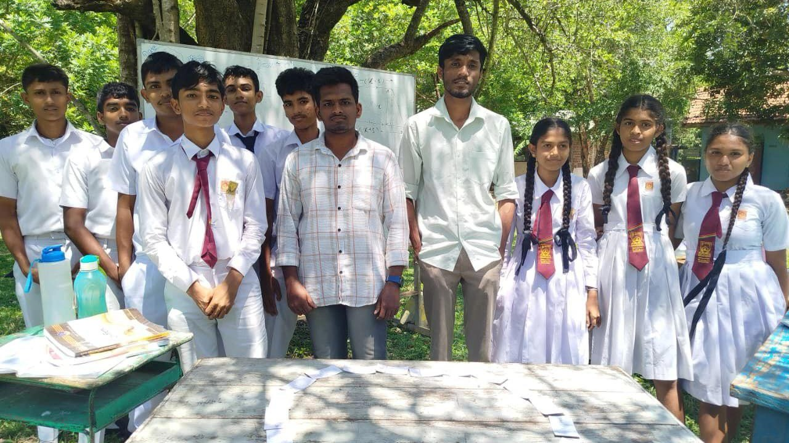
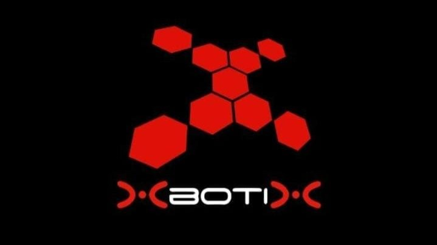
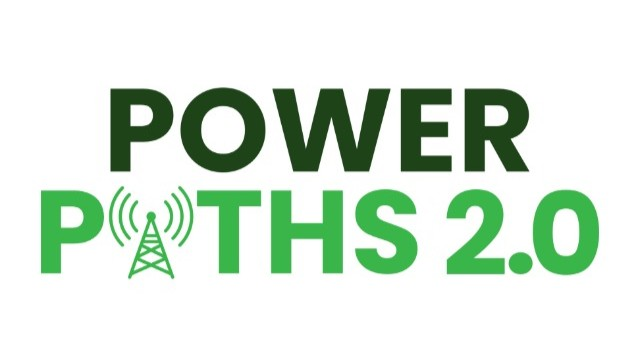

Featured Volunteering

CompletedSasnaka Sansada Foundation
Sasnaka Sansada Foundation | ගණිත සවිය - A volunteer initiative to provide free mathematics tutoring to students in need, fostering a love for learning and academic growth.
Key Focus: Community Engagement, Education

In ProgressXbotix | 2026
Designing engaging educational presentations and visual collateral for school outreach workshops and robotics awareness sessions.
Key Focus: Canva, Visual Design, Presentation Design, Technical Communication
Xbotix | 2026
Volunteered as a resource person for the Xbotix 2026 robotics competition, assisting with event coordination, technical support, participant engagement, and designing visual presentation materials.
Key Focus: Event Coordination, Technical Support, Visual Design (Canva), Technical Communication

In ProgressIEEE PES | POWER PATH 2.0
Volunteering in the Design Team for the Power Path 2.0 webinar series, creating promotional banners, visual assets, and event flyers to maximize student and professional outreach.
Key Focus: Canva, Visual & Flyer Design, Media Branding, IEEE PES Outreach